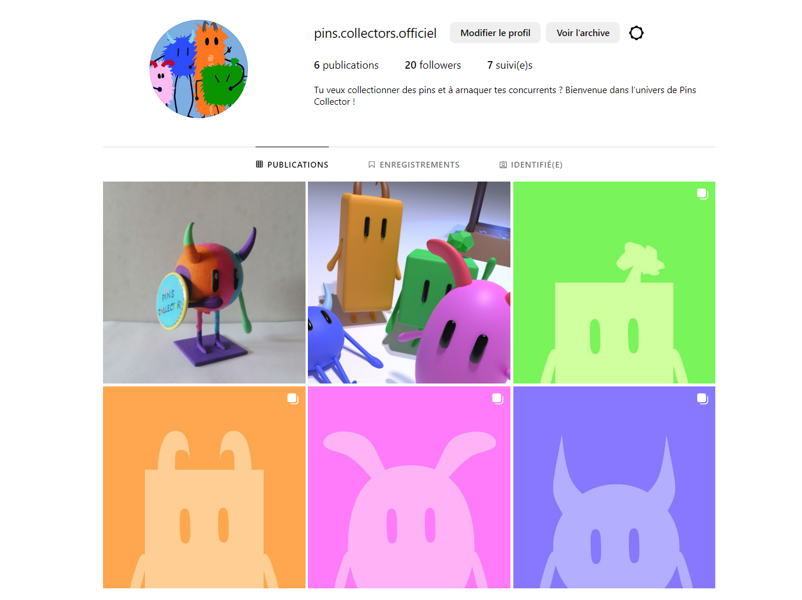

Pins Collector cherche à se différencier des autres jeux de plateau, par une approche novatrice. Les mécaniques de vol, d’échange et de négociation ne font pas juste partie du jeu, mais en sont l’essence même, et visent à ce que chaque partie puisse se dérouler de différentes manières et avec diverses stratégies.
Notre jeu se veut alors innovant, de part ses personnages attachants au fil des parties et des histoires, une interaction favorisée entre les joueurs incitant à la fois rires et compétition. Visant aussi bien la jeunesse que les plus grands enfants, c’est avec vous que Pins Collector souhaite créer des souvenirs inoubliables, des histoires interminables.
Ainsi nous voulons le faire connaitre auprés du publique, montrer que le jeu est amusant tout en elaborant des stratégies
Avec ce jeu nous voulons viser les enfants entre 7 à 15 ans qui vont s'interresser aux jeux de société, a collectionner ou encore au monde fantastique avec nos petits monstres
Notre jeu de plateau est ainsi distribution dans les magasins physiques comme joué club, la fnac ou encore Carrefour au prix de 29,99€.
Afin de faire connaitre pins collectors nous comptons faire sa promotion par des réseaux sociaux comme instagram ou alors de la publicité a la télévision ou sur youtube.
Nous voulons également présenter notre jeu dans des evènements tels que KidExpo à Paris Porte de Montreuil en Octobre pour préparer Noël ou le salon du Jeu à Paris Porte d’Italie en Novembre